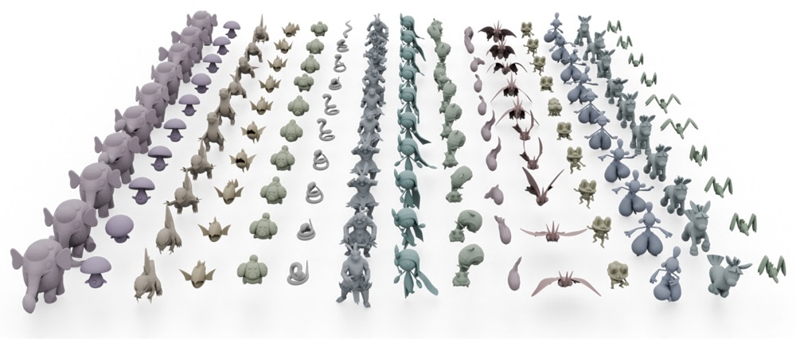

3D pose transfer aims to transfer the pose-style of a source mesh to a target character while preserving both the target's geometry and the source's pose characteristic. Existing methods are largely restricted to characters with similar structures and fail to generalize to category-free settings (e.g., transferring a humanoid's pose to a quadruped). The key challenge lies in the structural and transformation diversity inherent in distinct character types, which often leads to mismatched regions and poor transfer quality.
To address these issues, we first construct a million-scale pose dataset across hundreds of distinct characters. We further propose MimiCAT, a cascade-transformer model designed for category-free 3D pose transfer. Instead of relying on strict one-to-one correspondence mappings, MimiCAT leverages semantic keypoint labels to learn a novel soft correspondence that enables flexible many-to-many matching across characters. The pose transfer is then formulated as a conditional generation process, in which the source transformations are first projected onto the target through soft correspondence matching and subsequently refined using shape-conditioned representations.
Extensive qualitative and quantitative experiments demonstrate that MimiCAT transfers plausible poses across different characters, significantly outperforming prior methods that are limited to narrow category transfer (e.g., humanoid-to-humanoid).
TBD
We collect a dataset comprises hundreds of characters spanning a broad spectrum of species and morphologies, including humanoids, quadrupeds, birds, reptiles, fishes, and insects. Each character is paired with artist-designed skeletal animations, resulting in a total of 28k motions and 4.4 million frames.
@article{chai2025mimicat,
author = {Chai, Zenghao and Tang, Chen and Wong, Yongkang and Yang, Xulei and Kankanhalli, Mohan},
title = {MimiCAT: Mimic with Correspondence-Aware Cascade-Transformer for Category-Free 3D Pose Transfer},
journal = {arXiv preprint arXiv:2511.18370},
year = {2025},
}